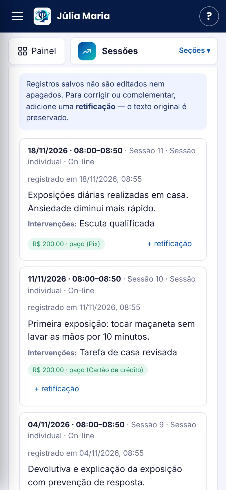
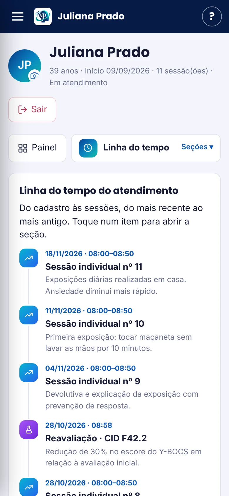
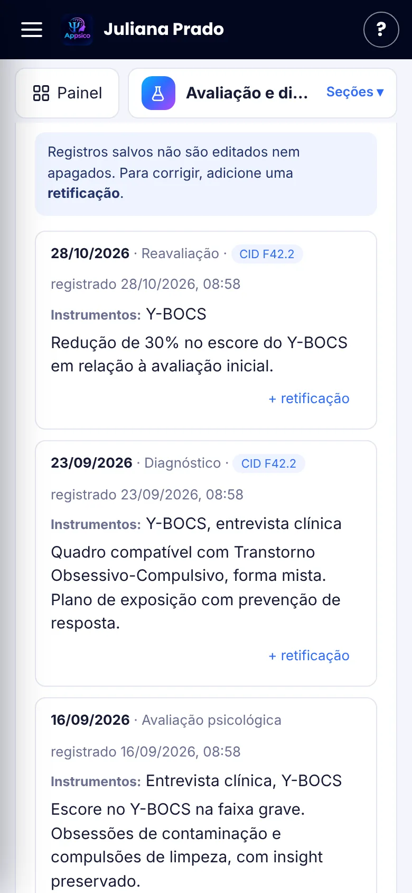
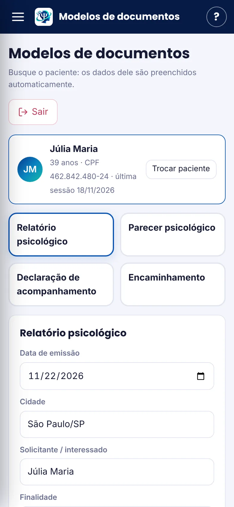
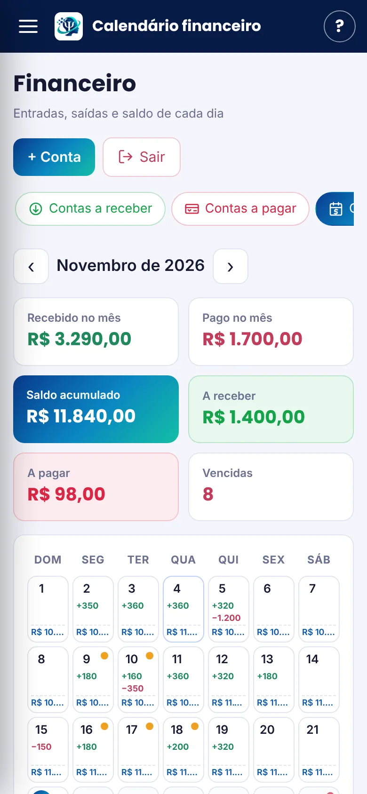
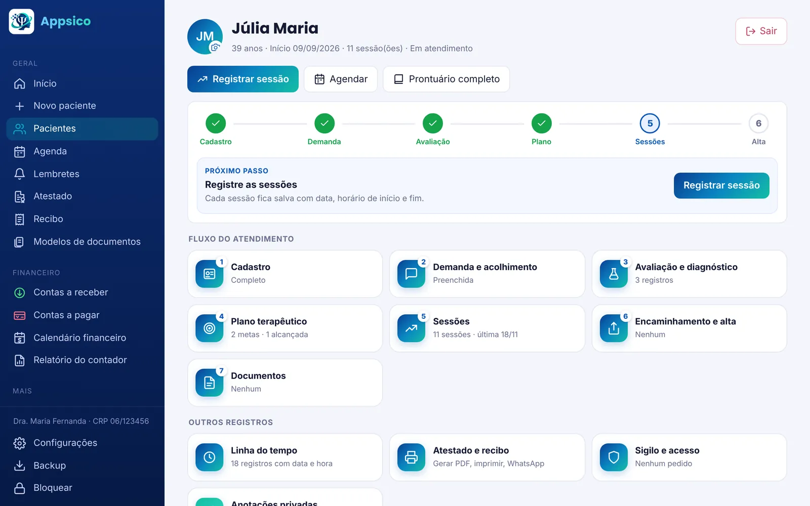
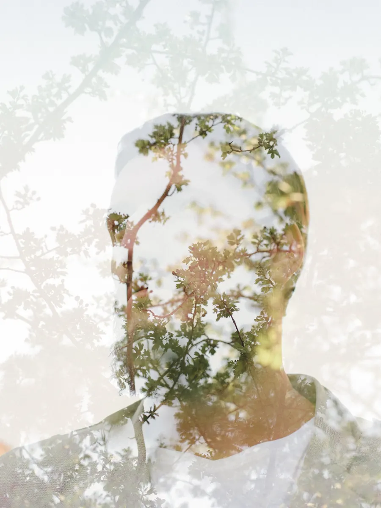
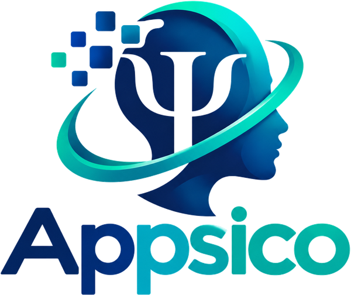

Mais tempo para o cuidado, menos tempo com papelada.
O Appsico organiza cada atendimento do cadastro à alta, seguindo as orientações do Conselho Federal de Psicologia. Agenda, sessões, documentos e financeiro num só lugar, no celular e no computador — com os prontuários criptografados no seu aparelho antes de ir para a nuvem.

Você cuida das pessoas. O Appsico cuida da organização.
Registros completos, sigilo garantido e tudo à mão no momento da sessão — para você se dedicar ao que realmente importa: a escuta.
Veja o app por dentro
Imagens do Appsico funcionando, com pacientes fictícios de demonstração. Toque em uma tela para ampliar.










No tablet e no notebook, o menu lateral fica sempre à mão.
Cada etapa no seu lugar
O prontuário segue o caminho natural do atendimento e mostra qual é o próximo passo. Tudo fica registrado com data e hora.
Cadastro
Dados do paciente, foto e responsável legal para menores.
Demanda
Motivo da busca, histórico e acolhimento.
Avaliação
Instrumentos, hipótese diagnóstica e CID.
Plano
Metas de curto, médio e longo prazo.
Sessões
Relato de cada sessão com horário de início e fim.
Alta
Encaminhamentos e encerramento do acompanhamento.
Menos burocracia, mais presença
Quem cuida da saúde mental dos outros também precisa de leveza. Com lembretes automáticos, documentos prontos e o financeiro organizado, sobra mais tempo para o paciente — e para você.
- Antes da sessãolembrete enviado e consulta confirmada
- Duranteo histórico do paciente a um toque
- Depoisrelato salvo com data e hora, recibo em PDF
Tudo o que o consultório precisa
Feito para a rotina clínica: rápido de preencher, fácil de consultar e seguro de guardar.
Agenda e lembretes
Calendário do mês, dia hora a hora e lembretes de consulta pelo WhatsApp em um toque, com confirmação na agenda.
Documentos prontos
Atestado, recibo, relatório e parecer psicológico, declaração e encaminhamento, preenchidos com os dados do prontuário.
Sessões e evolução
Registros com data e hora que não são apagados: correções viram retificações, como pede o registro documental.
Financeiro e Pix
Contas a receber e a pagar, saldo do dia, cobrança por Pix com QR Code e relatório para o contador.
Sigilo de verdade
Criptografia no aparelho, acesso por usuário e PIN, bloqueio de capturas de tela e anotações privadas separadas.
Celular e computador
Entre com sua conta no app Android ou no navegador do computador: tudo sincronizado, criptografado no seu aparelho antes de subir.

A confiança do paciente começa no prontuário
O registro documental é dever da psicóloga e do psicólogo. O Appsico segue a estrutura orientada pelo Conselho Federal de Psicologia e protege tudo de forma que só você tenha acesso — inclusive na nuvem.
- Criptografia de ponta a ponta: os prontuários são embaralhados no seu aparelho antes de ir para a nuvem — nem a equipe do Appsico consegue ler
- Acesso por e-mail e senha, PIN de 4 números em cada aparelho e código de recuperação só seu
- Seções orientadas pelo CFP: identificação, demanda, avaliação, objetivos, evolução, encaminhamentos e documentos
- Modelos de documentos na estrutura da Resolução CFP nº 06/2019
- Anotações privadas que nunca entram em documentos nem relatórios
- Registros que não se apagam: correções ficam como retificação datada
15 dias grátis, depois um preço justo
Teste tudo sem compromisso. Pagamento seguro pelo Mercado Pago, no cartão ou no Pix.
Teste grátis
- Tudo liberado
- Celular e computador
- Pacientes ilimitados no teste
- Baixe o app Android já no teste
Mensal
- Pacientes ilimitados
- Celular e computador
- App Android incluído
- Cancele quando quiser
Anual
- Tudo do Appsico
- Renova automaticamente
- Melhor custo-benefício
Anual no Pix
- Tudo do Appsico
- Sem cartão de crédito
- O app avisa antes de vencer
Depois do teste, o app funciona enquanto a assinatura estiver ativa. Sem assinatura, ele fica em modo consulta: você vê e exporta todos os prontuários, mas não registra nada novo. Nenhum dado é apagado.
Comece em 3 passos
Crie sua conta
Nome, CRP, e-mail e senha. Guarde o código de recuperação que aparece na hora — é ele que protege seus dados.
Escolha onde usar
No navegador do computador ou no app Android, que você baixa dentro da sua conta. Em cada aparelho, crie um PIN de 4 números.
Cadastre pacientes
Abra o primeiro prontuário e siga o fluxo do atendimento. Se quiser, carregue a demonstração com pacientes fictícios.
Comece seu teste grátis
15 dias com tudo liberado, no computador e no celular. Sem cartão de crédito.
Criar minha contaO app Android é baixado dentro da sua conta (Configurações → Conta e nuvem), durante o teste ou com a assinatura ativa. Ao instalar, o Android pode pedir para permitir “fontes desconhecidas”: basta autorizar para o navegador que você usou.

Perguntas frequentes
Onde ficam guardados os dados dos meus pacientes?
Na sua conta, para sincronizar celular e computador — mas criptografados no seu aparelho antes de sair dele. O servidor guarda só dados embaralhados: ninguém, nem a equipe do Appsico, consegue ler seus prontuários.
E se eu esquecer o PIN ou a senha?
Esqueceu o PIN: entre com o e-mail e a senha da conta e crie um novo. Esqueceu a senha: peça um link para criar outra e, no próximo acesso, digite o código de recuperação que o app mostrou quando você criou a conta. Sem a senha e sem esse código, nem o Appsico consegue abrir os dados.
Como uso no computador ou num celular novo?
Entre com o seu e-mail e senha: os prontuários aparecem sincronizados. No computador, use direto pelo navegador.
O que acontece depois dos 15 dias?
Se não assinar, o Appsico entra em modo consulta: você continua vendo e exportando em PDF todos os prontuários (como o CFP exige que você possa fazer), mas não registra sessões, pacientes, agenda ou financeiro. Assinou, volta tudo na hora, com todos os dados. O app confere a assinatura pela internet pelo menos a cada 7 dias.
O Appsico segue as orientações do CFP?
O prontuário é organizado nas seções de registro documental orientadas pelo Conselho Federal de Psicologia, e os modelos de documentos seguem a estrutura da Resolução CFP nº 06/2019. O conteúdo e a guarda dos registros continuam sendo responsabilidade do profissional.
Como funcionam os lembretes pelo WhatsApp?
Na tela Lembretes, toque em Enviar: o WhatsApp abre com a mensagem pronta para o paciente (ou para o responsável, no caso de menores). Quando ele responder, marque como confirmado.
Funciona no iPhone?
Por enquanto o Appsico está disponível apenas para Android (celular e tablet).
Posso cancelar a assinatura?
Sim. Os planos mensal e anual são cobrados pelo Mercado Pago e podem ser cancelados a qualquer momento na sua conta do Mercado Pago. O Anual no Pix é um pagamento único que vale 12 meses e não renova sozinho.
Como falo com o suporte?
Escreva para contato@appsico.com.br. Nunca envie dados de pacientes ao suporte.